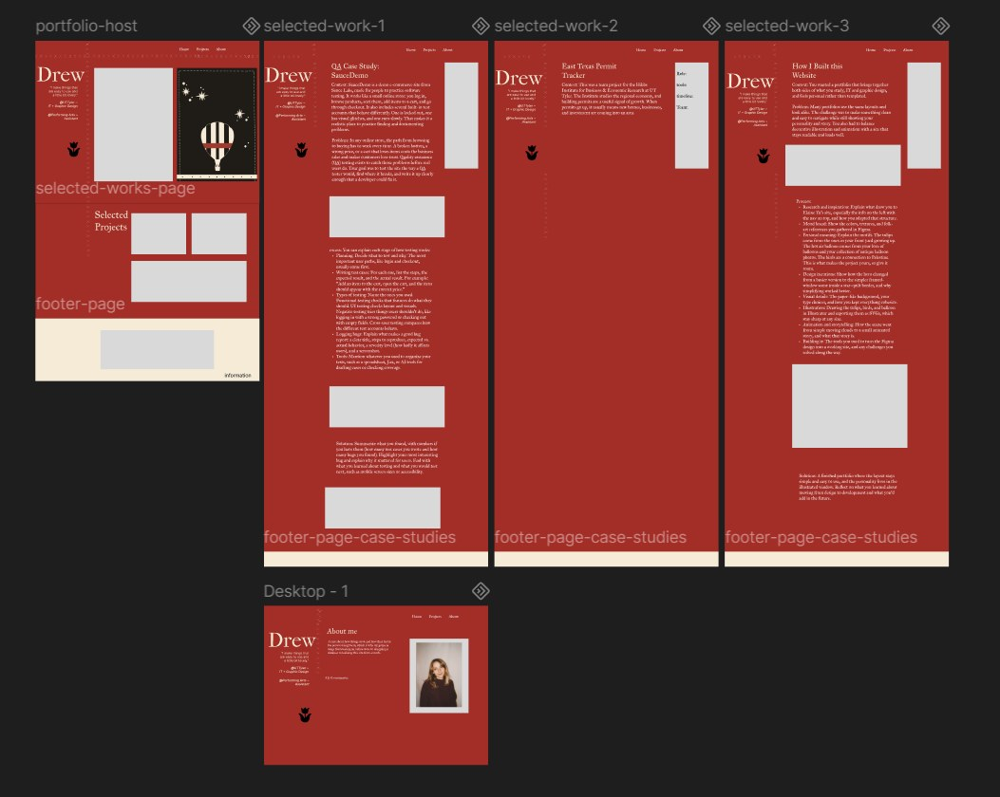
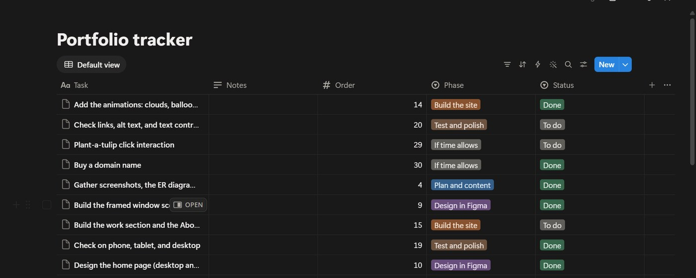
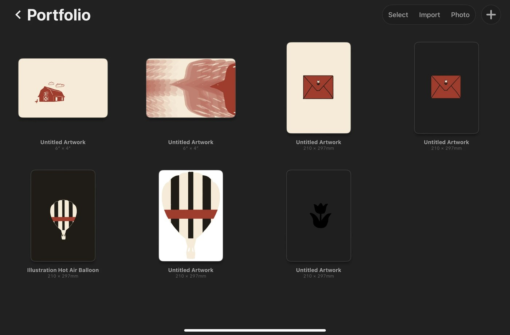

How I Built this
Website
Intro
Two sides, one site
With studying Information Technology and Graphic Design, I wanted a place to show both sides, which led to me designing my own website for a portfolio.
- Role
- Designer + Developer
- Tools
- Figma, Procreate, HTML and CSS
- Timeline
- 6 weeks
- Team
- Myself
How it started
Moodboard and folk art
A lot of my thinking starts with a good ole moodboard. It helps me with my inspiration and how I want the overall look to be. A lot of the inspiration came from folk art that my great grandmother painted a lot of in the 1920s. This then led to me doing research on it. Here's my research. With researching folk art, I got to learn it's less about the perfect technique and more about storytelling and where you came from.
My great grandmother has always been a great inspiration for me. Growing up, I always heard stories about her and her art with painting and poetry, so being able to incorporate her into my portfolio was really special.
After my research, I started designing in Figma. I had a difficult time figuring out the colors, but I wanted the design to really reflect myself, which led to Canton, TX. Every summer we would visit before going to summer camp to see family, and I always connected Canton with First Monday (which is the world's largest outdoor flea market). A lot of the items sold were antiques, and I wanted my design and colors to be based off vintage colors.

Planning
Portfolio tracker

Illustrations
All drawn by me
After figuring out the overall design, I wanted to incorporate my own art. I didn't incorporate any AI when it came to my artwork because I wanted to use AI as a tool and not so much let it control what I want the design to look like.

What I've learned
Thinking outside the box
Building this website was a fun process overall and taught me to enjoy tech more. At times, tech can feel like a box to me, but this past year I've really wanted to put myself out there. Ada Lovelace, the first computer programmer, has become a woman who inspires me in this industry. She saw that early computers could do more than math, like create music, and designing and coding this website made me think outside the box about what tech can be, too.